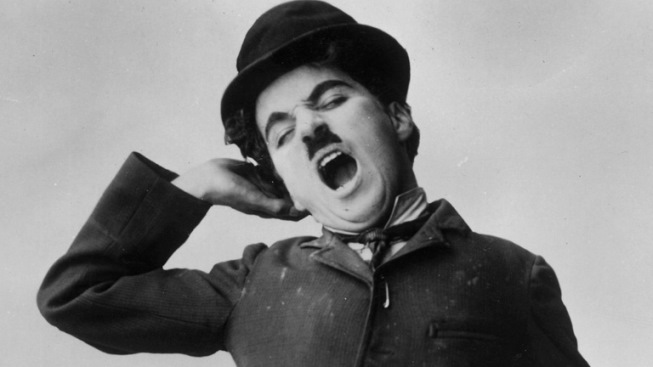

Charlie Chaplin

Sir Charles Chaplin KBE, an English film actor, film maker and composer, in one of his classic poses.
Here there will be a time line of Chaplin's life
- Item 1
- Item 2
- Item 3
- Item 4
- Item 5
Then achievements / best films
- Item 1
- Item 2
- Item 3
- Item 4
- Item 5
Life is a tragedy when seen in close-up, but a comedy in long-shot.
Links to resources
Music in Charles Chaplin